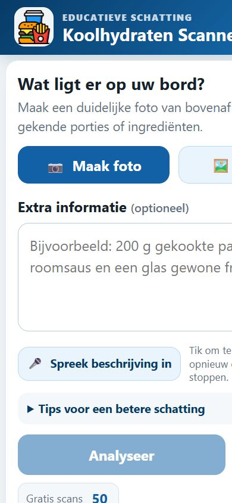
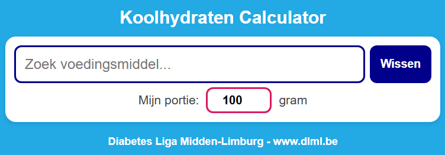
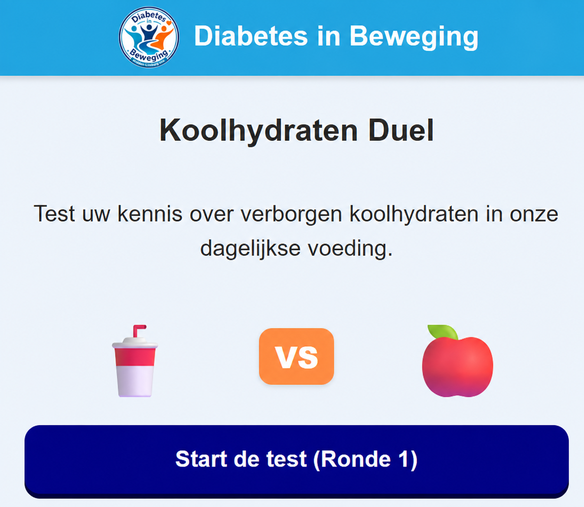

Externe Jotform-app
Externe Jotform-app
Activiteiten-app
Bekijk onze activiteiten in een overzichtelijke mobiele toepassing.
- Activiteiten snel raadplegen
- Geschikt voor Android en iPhone

Probeer de toepassingen meteen uit op uw computer, tablet of gsm. Met de installatie-uitleg kunt u ze daarna eenvoudig als app op uw gsm plaatsen.
Uw toestel wordt gecontroleerd…
Externe Jotform-app
Bekijk onze activiteiten in een overzichtelijke mobiele toepassing.

AI-hulpmiddelMaak een foto van een maaltijd en ontvang een indicatieve schatting van de koolhydraten. Een extra beschrijving of ingesproken uitleg kan de analyse ondersteunen.

Werkt ook offlineZoek een voedingsmiddel, vul het gewicht van uw portie in en bereken een indicatieve hoeveelheid koolhydraten.

OefeningVergelijk telkens twee voedingsmiddelen en kies welk product de meeste koolhydraten bevat. Na iedere keuze krijgt u meteen uitleg.
Onze website op uw gsm
Er komt een herkenbaar pictogram van Diabetes in Beweging tussen uw andere apps. Tik later op dat pictogram en onze website opent onmiddellijk.